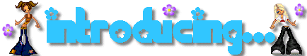
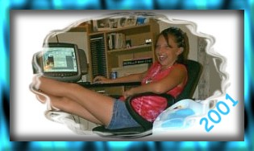
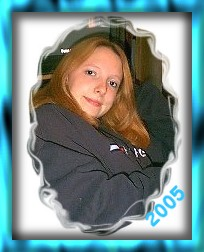
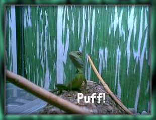
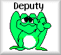
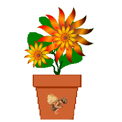
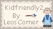

Hi! My name is Shana, and this is my website!
I am not good with HTML yet so my mom is helping me with this.
This site was supposed to be mostly about dolls that I had made or collected,
but I decided what the heck I might as well throw some of my own life into the mix,
put a little spin on things.
So I am now 17 years old, but I started this website when I was 14.
I am OFFICIALLY a Senior, and will be graduating in 2006!
I am really excited about that, I just hope all my friends stay in touch!
Anywho some of my favorite things are;
EMINEM, The Theater, the color blue, Mountain Dew, K-Swiss Shoes, pizza,
the Crispy Chicken meal at Burger King, and Steak and Nacho Cheese Chalupas
from Taco Bell!!
I'm also a HUGE
Sim
fan!
Have been since I was 14 or 15.
Got my first Sim game...Sims Deluxe, and now have the entire expansion packs for that,
then this last December, rec'd Sims 2!
And as soon as the expansion pack "University" came out, bought it.
Now anxiously awaiting for "Nightlife"! :)
*giggle* I even got my mom addicted to Sims!
She's been playing in the Homecrafter,
creating new paper/paints/panelling and floors! :)
Ohhh...meet my dragon!

I know, not a very original name! LOL!
He's mine and my lil sis's, Chinese Water Dragon.
Have had him since February.
He likes to "pose" for pics! :)
And don't forget to sign my guestbook before you go to check out MDollz :)
All the links and my Spiritbook below,
will open in another window.
~*~Casual Dollz~*~
~*~Formal Dollz~*~
~*~Summer Dollz~*~
~*~Couple Dollz~*~
~*~Holiday Dollz~*~
~*~Friendz Dollz~*~
~*~Now...on to some other interests!~*~
~*~My Fave~*~
~*~My Birthday Page '02!~*~
~*~Snowfest 2004!~*~
~*~My Birthday Page, 2004!~*~
~*~My Birthday Page, 2005!~*~
~*~My Passion!~*~
~*~My Scrapbook!~*~
~*~My SIMS!~*~
~*~My L'il Sisters Site!~*~
~*~My Moms Site!~*~
~*~Country Tales Spirit Page!~*~
~*~Vote Exchange!~*~
~*~Fun Stuff!~*~
~*~Happy ALL Holidays!~*~


Aug. 8, '05

Send a Spirit Flower!
Thank you Spirit Butterfly!!

